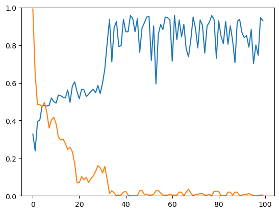

Jack Martin Bunyan
Agent-Based Model
of Language Evolution

An improvement on the current iterated learning model: ILMs are
used to reflect the concept of language evolution within a population of
teacher and learner agents. I have been employing neural networks and
genetic algorithmic concepts to implement such models, while
endeavoruing to decrease the computational complexity required to run
these simulations. The aim is to present a new model for which to
simulate language evolution that does not require an obversion process.
View the project's poster
here. All code was written in Python using standard libraries, numpy and
PyTorch.
Maze
Solving
Multi-Agent Maze Solving Project:
a Prolog program that allowed up to ten agents to solve randomly
generated mazes, each with one start and end location, using an A*
pathing algorithm and delegation of tasks between agents to increase
efficiency and minimise time taken.
CSS Game
Jam 2022
Bristol Computer Science Society's annual game jam event: Another
year taking part in a 24hr game jam event hosted by the Bristol CSS.
Where I developed a game about preventing an evil AI from stealing
nuclear launch codes alongside a small team. This year's theme was "It's
not a bug its a feature" and so our game used the concept of finding
bugs in the site to break in. The game is designed to be an interactive,
immersive website experience with a series of minigames needing to be
completed to prevent world domination. My role was to devlop four small
8-bit style games to act as the minigames: a maze game, a platformer,
View the project and play the game
online. Pictured here is one of the minigames.
Summer
Internship
Business Simulation Game for MTa Learning:
Full-stack development on a business simulation game created over six
weeks to be used to encourage and develop problem solving skills and
team working within groups at a company or school. It involved;
designing the model financial market used, creating a REST API linking
to a MongoDB database, web-based REACT app implementation using
TypeScript. Inspired by the original UNISIM business game.
Gromit
Sculptures

Video Streaming Web App for the University of Bristol's work with The
Grand Appeal:
Led a team of fellow students that developed a video link between two
interactive sculptures based on Aardman's famous character, Gromit.
Implemented using a Java Spring Boot backend with a REACT app frontend.
Part of a second year unit called Software Engineering Project, where I
utilised good industry team practices: using Kanban board, Git Actions
and an AGILE development mentality. The workload was split amongst the
team and I mainly facilitated backend development, working with gradle
build scripts and Spring Boot itself.
CSS Game
Jam 2021
Bristol Computer Science Society's annual game jam event: Took
part in a 24hr game jam event hosted by the Bristol CSS where I
developed a Halloween themed endless runner shooter game. Written in lua
as part of the PICO-8 fantasy console. The time pressure nature of the
event allowed me to practice working to a tight deadline and gave me an
insight into the need to prioritise features for a timed release. The
PICO-8 environment is intentionally limited to replicate an old games
console with tight limitations like a fixed 32k data capacity, so
working on it was an exciting challenge. View the project on
GitHub.
Scotland
Yard

First-year coursework to implement game logic: Scotland Yard is a
turn-based strategy board game where a team of detectives search to
capture a fugitive, Mr. X, in a set number of moves. Our unit director
gave us a skeleton codebase with the graphical design in place and it
was our job to implement the game logic and rules. An open end extension
to the project involved implementing an AI to contol Mr.X to escape the
detectives. I implemented a Breadth-First Search with postion analysis
to decide on the best moves for Mr. X at each turn. The project was
written in Java exclusively.
WDF Routing
Software

A bi-directional Dijkstra's Algorithm: For my A-Level project, I
developed a rotuing software for my school's buildings with the
intention being to help new students or staff navigate their way around.
Development was solely in Python, utilising both imperative and
object-orientated programming paradigms for my solution. The backend
graph traversal algorithm was accessed via a Graphical User Interface
using Python's guizero library. I received an A* for the end product in
my assessment. View the project on
GitHub.
Work
Shadowing
One week of work experience at DTSQUARED: At the end of Year 12 I
experienced working at a London-based data consultancy company. During
my time there I tested out a new product for them, Snowflake, a data
warehousing tool. However, I also shadowed the team on their day to day
work and learned the principles of data governance and understanding
real-world clients.